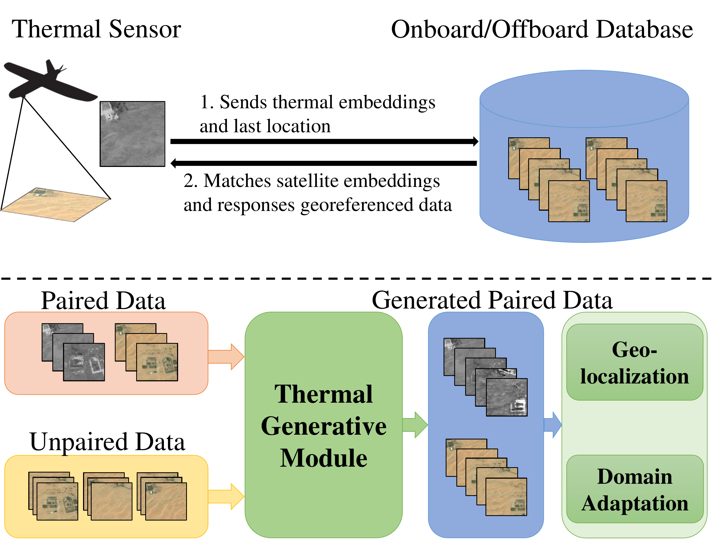
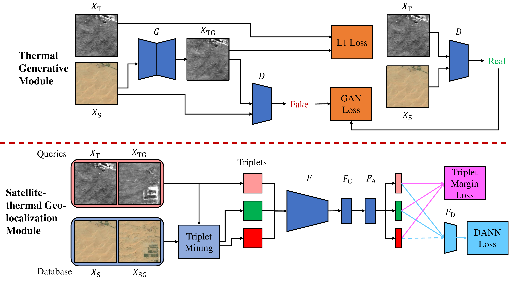
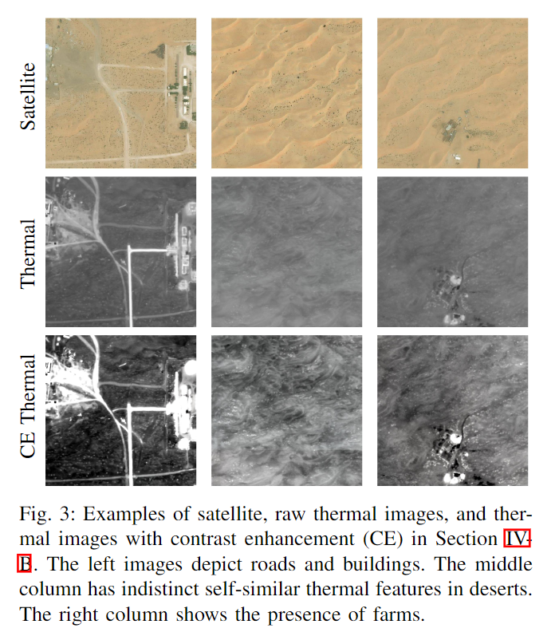

STGL proposes an image-retrieval-based thermal geo-localization framework for long-range UAV flights using satellite RGB imagery, featuring domain adaptation methods and a new dataset, Boson-nighttime.
Onboard sensors, such as cameras and thermal sensors, have emerged as effective alternatives to Global Positioning System (GPS) for geo-localization in Unmanned Aerial Vehicle (UAV) navigation. Since GPS can suffer from signal loss and spoofing problems, researchers have explored camera-based techniques such as Visual Geo-localization (VG) using satellite RGB imagery. Additionally, thermal geo-localization (TG) has become crucial for long-range UAV flights in low-illumination environments. This paper proposes a novel thermal geo-localization framework using satellite RGB imagery, which includes multiple domain adaptation methods to address the limited availability of paired thermal and satellite images. The experimental results demonstrate the effectiveness of the proposed approach in achieving reliable thermal geo-localization performance, even in thermal images with indistinct self-similar features. We evaluate our approach on real data collected onboard a UAV. We also release the code and Boson-nighttime, a dataset of paired satellite-thermal and unpaired satellite images for thermal geo-localization with satellite imagery. To the best of our knowledge, this work is the first to propose a thermal geo-localization method using satellite RGB imagery in long-range flights.

STGL enables GPS-free geo-localization for UAVs during nighttime flights by matching thermal imagery against satellite RGB maps.
Top: A UAV equipped with a thermal sensor sends thermal embeddings and its last known location to an onboard/offboard database, which matches satellite embeddings and returns georeferenced data. Bottom: The Thermal Generative Module (TGM) takes paired and unpaired satellite data to generate thermal images, enabling both geo-localization training and domain adaptation.

The proposed framework has two main components: a Thermal Generative Module (TGM) and a Satellite-thermal Geo-localization Module (SGM). TGM leverages a pix2pix model to generate fake thermal images from satellite images, trained with GAN and L1 losses. SGM uses a feature extractor with NetVLAD aggregation, trained with triplet margin loss and DANN loss for domain adaptation between thermal and satellite image domains. The generated paired dataset from TGM augments the limited real paired data, significantly improving geo-localization performance.
We introduce Boson-nighttime, a new dataset of paired satellite-thermal images for thermal geo-localization research. Data was captured using a FLIR Boson thermal imager (8.7 mm focal length, 640p resolution, 50° horizontal FOV) across six nighttime flights (9:00 PM–4:00 AM), producing nadir imagery at approximately 1 m/px spatial resolution.
Thermal maps were reconstructed via structure-from-motion (SfM) and orthorectified by aligning with Bing satellite maps at the same spatial resolution. The dataset covers 33 km² of predominantly desert terrain with scattered farms, roads, and buildings. The low-contrast, self-similar thermal features in desert regions make fine-grained geo-localization particularly challenging.
We tile the thermal and satellite maps into 512×512 px crops with a stride of 35 px, creating matched pairs. Three flight areas are used for training and validation, and three for testing, yielding 10,256 / 13,011 / 26,568 train/val/test pairs respectively.

Raw thermal images are low-contrast with indistinct self-similar features. We apply contrast enhancement (CE) to boost feature visibility, which significantly improves geo-localization accuracy. Below: satellite images (left), raw thermal images (center), and contrast-enhanced thermal images (right).
@INPROCEEDINGS{10342068,
author={Xiao, Jiuhong and Tortei, Daniel and Roura, Eloy and Loianno, Giuseppe},
booktitle={2023 IEEE/RSJ International Conference on Intelligent Robots and Systems (IROS)},
title={Long-Range UAV Thermal Geo-Localization with Satellite Imagery},
year={2023},
volume={},
number={},
pages={5820-5827},
doi={10.1109/IROS55552.2023.10342068}}